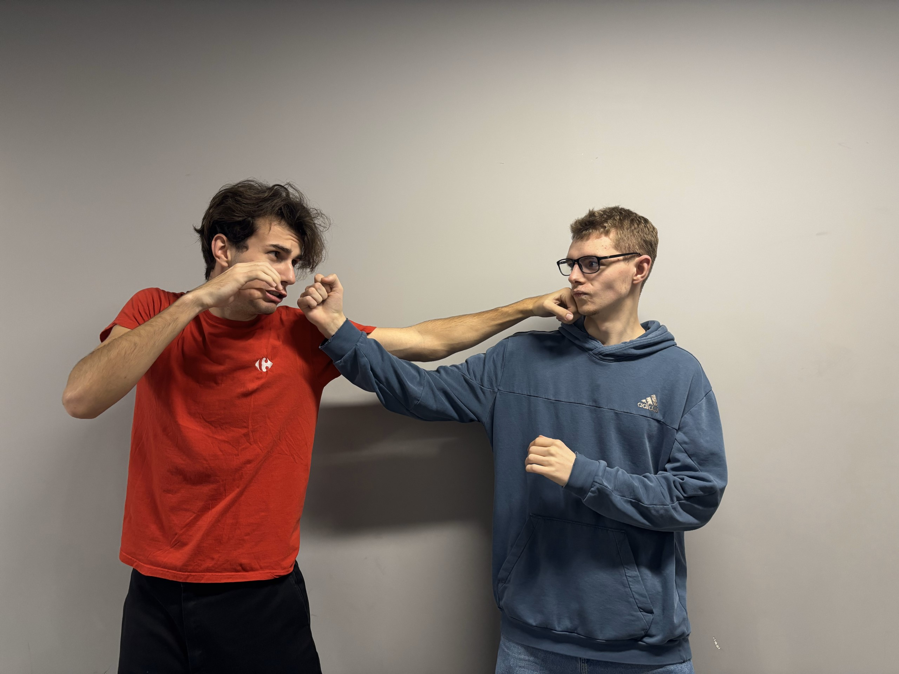
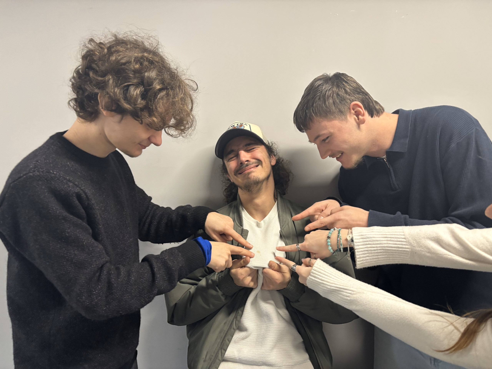
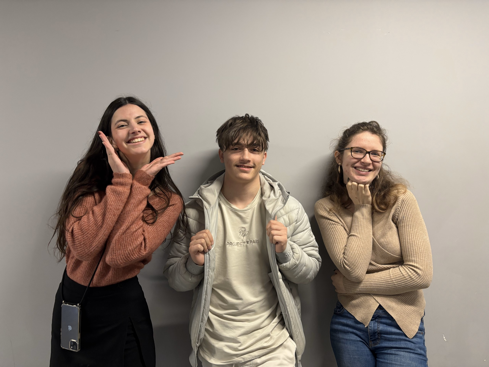
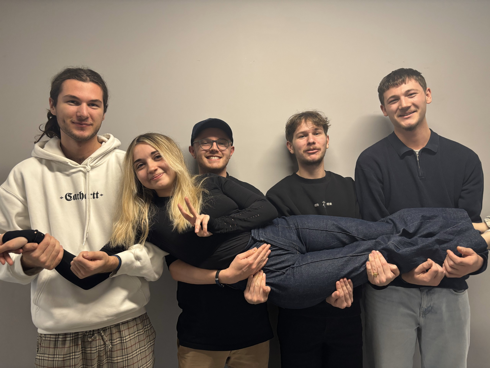
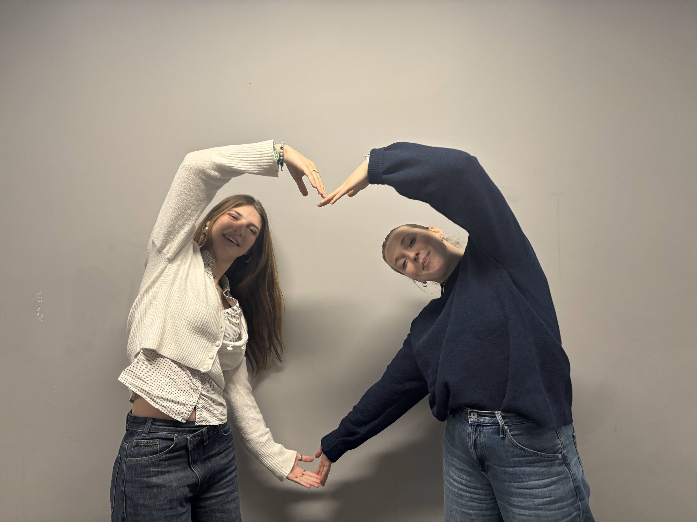

🔴 EN DIRECT TWITCH
1 / 2
On est GOTCHA, le média étudiant sur les Ydays.
Ici, on explique les projets et on rend tout ça fun et simple à comprendre.
On fait des vidéos, des micro-trottoirs, des formats humour et des livestreams… Bref, on centralise tout pour que t'aies toutes les infos sur les Ydays au même endroit.
On est vous, pour là.
1 / 2
Teams
Les différents Pôles de GOTCHA
La Cheffe
Notre Gourou, elle gère tout et nous guide dans la bonne direction
Notre Gourou, elle gère tout et nous guide dans la bonne direction

Le Pôle informatique
Les nerds de l'équipe, on s'occupe du site web
Les nerds de l'équipe, on s'occupe du site web

Le Pôle Vidéo explicative
Enfin du contenu qualitatif
Enfin du contenu qualitatif

Le Pôle Micro-trottoir
On aime se balader et poser des questions aux gens
On aime se balader et poser des questions aux gens

Le Pôle ON EST DES BATARDS
Les rois du livestream et du contenu déjanté
Les rois du livestream et du contenu déjanté

Le Pôle Market-Com
Les casses-pieds de la com', on mets la pression en faisant genre de servir à quelque chose
Les casses-pieds de la com', on mets la pression en faisant genre de servir à quelque chose